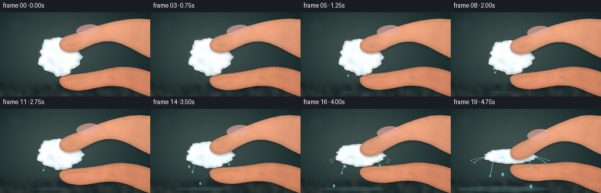
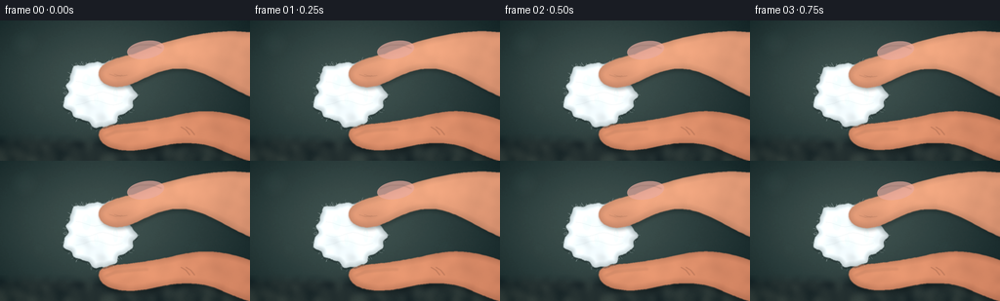

CODING AGENTS AS PIXEL WORLD MODELS
traex/GPT-5.6-Sol · mechanics_0016
点击播放 · 原生 RGB 像素
逐轮保存的候选
回放视频、检查图与代码变化。
每份候选均可单独播放。实际图片检查记录在下方工具轨迹中。
候选 01播放与检查图
点击播放 · 原生 RGB 像素


展开代码变化
--- 上一保存版本
+++ 本次保存版本
@@ -0,0 +1,326 @@
+from pathlib import Path
+import math
+import numpy as np
+import cv2
+from PIL import Image, ImageDraw, ImageFilter
+import artifact_io
+
+# Deterministic procedural macro rendering of a water-soaked cotton ball being pinched.
+W, H, N, SCALE = 256, 144, 20, 3
+SW, SH = W*SCALE, H*SCALE
+rng = np.random.default_rng(1601)
+
+def scpts(points):
+ return [(int(round(x*SCALE)), int(round(y*SCALE))) for x,y in points]
+
+def bezier(p0,p1,p2,p3,n=24):
+ ts=np.linspace(0,1,n,endpoint=False)
+ out=[]
+ for t in ts:
+ u=1-t
+ out.append((u**3*p0[0]+3*u*u*t*p1[0]+3*u*t*t*p2[0]+t**3*p3[0],
+ u**3*p0[1]+3*u*u*t*p1[1]+3*u*t*t*p2[1]+t**3*p3[1]))
+ return out
+
+def smooth_loop(segments):
+ pts=[]
+ for seg in segments: pts += bezier(*seg)
+ return pts
+
+def mask_polygon(points, blur=.45):
+ m=Image.new('L',(SW,SH),0)
+ ImageDraw.Draw(m).polygon(scpts(points),fill=255)
+ if blur: m=m.filter(ImageFilter.GaussianBlur(blur*SCALE))
+ return np.asarray(m,dtype=np.float32)/255.
+
+def blend(base, layer, alpha):
+ a=np.clip(alpha,0,1)[...,None]
+ return base*(1-a)+layer*a
+
+def colored_layer(color):
+ out=np.empty((SH,SW,3),np.float32); out[:]=color
+ return out
+
+def ellipse_layer(canvas, box, fill, outline=None, width=1, blur=0):
+ lay=Image.new('RGBA',(SW,SH),(0,0,0,0)); d=ImageDraw.Draw(lay)
+ bb=tuple(int(v*SCALE) for v in box)
+ d.ellipse(bb,fill=fill,outline=outline,width=max(1,int(width*SCALE)))
+ if blur: lay=lay.filter(ImageFilter.GaussianBlur(blur*SCALE))
+ arr=np.asarray(lay).astype(np.float32)
+ return blend(canvas,arr[...,:3],arr[...,3]/255.)
+
+# Stable film grain and soft material texture fields.
+noise=rng.normal(0,1,(SH,SW)).astype(np.float32)
+fine=cv2.GaussianBlur(noise,(0,0),.42*SCALE)
+coarse=cv2.GaussianBlur(noise,(0,0),4.2*SCALE)
+coarse=(coarse-coarse.mean())/(coarse.std()+1e-5)
+
+def background(frame):
+ yy,xx=np.mgrid[0:SH,0:SW].astype(np.float32); x=xx/SCALE; y=yy/SCALE
+ # Cool, quiet macro-studio background, lighter behind the cotton.
+ rad=np.exp(-((x-103)**2/(2*91**2)+(y-64)**2/(2*62**2)))
+ top=np.array([31,48,50],np.float32); light=np.array([64,82,79],np.float32)
+ img=top[None,None,:]*(1-rad[...,None]) + light[None,None,:]*rad[...,None]
+ # Stone work surface begins low in frame.
+ surface=np.clip((y-116)/11,0,1)
+ stone=np.stack([46+5*coarse,58+5*coarse,58+4*coarse],axis=-1)
+ img=img*(1-surface[...,None])+stone*surface[...,None]
+ img += fine[...,None]*1.35
+ # subtle vignette
+ vig=np.clip(((x-128)/165)**2+((y-70)/115)**2,0,1)
+ img -= vig[...,None]*13
+ return np.clip(img,0,255)
+
+def draw_bokeh(img):
+ im=Image.fromarray(np.uint8(img),'RGB').convert('RGBA')
+ ov=Image.new('RGBA',(SW,SH),(0,0,0,0)); d=ImageDraw.Draw(ov)
+ circles=[(25,23,14,(150,190,180,9)),(227,25,19,(178,189,164,8)),(40,91,7,(184,216,207,8)),(201,90,10,(91,153,149,8))]
+ for x,y,r,c in circles: d.ellipse(((x-r)*SCALE,(y-r)*SCALE,(x+r)*SCALE,(y+r)*SCALE),fill=c)
+ ov=ov.filter(ImageFilter.GaussianBlur(5*SCALE)); return np.asarray(Image.alpha_composite(im,ov).convert('RGB'),np.float32)
+
+def water_back(img,p,fi,cx,cy,rx,ybot):
+ # Growing translucent puddle at the foot of the shot.
+ if p>0.10:
+ q=(p-.1)/.9
+ lay=Image.new('RGBA',(SW,SH),(0,0,0,0)); d=ImageDraw.Draw(lay)
+ ex=(18+63*q)*SCALE; ey=(2.5+3*q)*SCALE
+ center=((83+7*q)*SCALE,137*SCALE)
+ d.ellipse((center[0]-ex,center[1]-ey,center[0]+ex,center[1]+ey),fill=(70,146,156,int(30+36*q)))
+ d.ellipse((center[0]-ex*.7,center[1]-ey*.55,center[0]+ex*.7,center[1]+ey*.25),fill=(183,224,222,int(18+24*q)))
+ lay=lay.filter(ImageFilter.GaussianBlur(1.2*SCALE)); a=np.asarray(lay).astype(np.float32)
+ img=blend(img,a[...,:3],a[...,3]/255.)
+ # Persistent falling drops emitted throughout the accelerated squeeze.
+ events=[(3,-.58,0.1),(5,.57,0.5),(7,-.82,1.0),(9,.80,.0),(11,-.36,.4),(12,.48,.8),(13,-.92,.2),(14,.92,.6),(15,-.63,.1),(16,.68,.7),(17,-.25,.3),(18,.35,.9)]
+ lay=Image.new('RGBA',(SW,SH),(0,0,0,0)); d=ImageDraw.Draw(lay)
+ for start,side,phase in events:
+ age=fi-start
+ if age<0 or age>4: continue
+ sx=cx+side*rx*.88; sy=cy+7+abs(side)*5
+ vx=side*(2.0+2.8*p); yy=sy+age*7.0+age*age*2.25
+ xx=sx+vx*age
+ if yy>142: continue
+ rr=1.15+1.1*p
+ # pear-shaped drop plus pin highlight
+ d.ellipse(((xx-rr)*SCALE,(yy-rr*1.45)*SCALE,(xx+rr)*SCALE,(yy+rr*1.45)*SCALE),fill=(116,201,210,190))
+ d.ellipse(((xx-.35)*SCALE,(yy-rr*.8)*SCALE,(xx+.15)*SCALE,(yy-rr*.15)*SCALE),fill=(236,255,252,205))
+ a=np.asarray(lay).astype(np.float32); return blend(img,a[...,:3],a[...,3]/255.)
+
+def transform_upper(pt,p):
+ x,y=pt; w=np.clip((222-x)/112,0,1); return x,y+20.5*p*w
+
+def transform_lower(pt,p):
+ x,y=pt; w=np.clip((224-x)/118,0,1); return x,y-13.8*p*w
+
+def upper_outline(p):
+ segs=[((256,12),(220,8),(176,17),(138,34)),
+ ((138,34),(118,38),(103,43),(101,53)),
+ ((101,53),(100,62),(109,68),(121,68)),
+ ((121,68),(139,67),(151,54),(174,50)),
+ ((174,50),(203,45),(224,64),(256,78)),
+ ((256,78),(257,57),(257,31),(256,12))]
+ return [transform_upper(v,p) for v in smooth_loop(segs)]
+
+def lower_outline(p):
+ segs=[((256,102),(226,91),(204,91),(177,98)),
+ ((177,98),(153,103),(132,106),(115,107)),
+ ((115,107),(103,108),(98,115),(103,123)),
+ ((103,123),(110,134),(134,136),(159,130)),
+ ((159,130),(184,124),(205,124),(224,132)),
+ ((224,132),(238,138),(250,143),(256,144)),
+ ((256,144),(257,128),(257,113),(256,102))]
+ return [transform_lower(v,p) for v in smooth_loop(segs)]
+
+def skin_render(img,points,p,upper=True):
+ m=mask_polygon(points,.35)
+ yy,xx=np.mgrid[0:SH,0:SW].astype(np.float32); x=xx/SCALE; y=yy/SCALE
+ # Warm skin with subsurface color, edge occlusion, and pore-scale texture.
+ dist=cv2.distanceTransform(np.uint8(m>.45),cv2.DIST_L2,5)/SCALE
+ edge=np.clip(dist/7,0,1)
+ if upper:
+ base=np.array([211,143,111],np.float32); light=np.exp(-((x-166)**2/(2*60**2)+(y-(28+8*p))**2/(2*26**2)))
+ else:
+ base=np.array([202,128,96],np.float32); light=np.exp(-((x-147)**2/(2*55**2)+(y-(111-8*p))**2/(2*20**2)))
+ layer=np.zeros_like(img)+base
+ layer += light[...,None]*np.array([25,22,17])
+ layer -= (1-edge[...,None])*np.array([24,16,12])
+ layer += coarse[...,None]*np.array([2.6,1.7,1.25]) + fine[...,None]*.7
+ return blend(img,np.clip(layer,0,255),m)
+
+def line_overlay(img, paths, color, width=1, blur=0):
+ lay=Image.new('RGBA',(SW,SH),(0,0,0,0)); d=ImageDraw.Draw(lay)
+ for pts in paths: d.line(scpts(pts),fill=color,width=max(1,int(width*SCALE)),joint='curve')
+ if blur: lay=lay.filter(ImageFilter.GaussianBlur(blur*SCALE))
+ a=np.asarray(lay).astype(np.float32); return blend(img,a[...,:3],a[...,3]/255.)
+
+def draw_lower_hand(img,p):
+ pts=lower_outline(p)
+ # deep soft cast shadow
+ shadow=[(x+1.5,y+3.0) for x,y in pts]; sm=mask_polygon(shadow,2.7)
+ img=blend(img,colored_layer((13,21,22)),sm*.52)
+ img=skin_render(img,pts,p,False)
+ # moving highlight along the fingertip
+ sy=-13.8*p
+ img=line_overlay(img,[[(108,118+sy),(118,114+sy),(136,112+sy),(151,111+.65*sy)]],(247,185,150,72),1.4,1.0)
+ # natural flexion creases toward the palm
+ creases=[]
+ for off in (0,5):
+ creases.append([(185+off,109),(190+off,112),(194+off,117)])
+ img=line_overlay(img,creases,(118,66,54,78),.72,.3)
+ return img
+
+def cotton_shape(fi,p):
+ cx=101.5 + .9*math.sin(fi*.22)
+ top=41.5+27.0*p
+ bot=108.0-14.2*p
+ cy=(top+bot)/2; ry=(bot-top)/2
+ rx=35.2+8.9*p
+ return cx,cy,rx,ry,top,bot
+
+def cotton_mask_and_points(fi,p,cx,cy,rx,ry):
+ n=180; ang=np.linspace(0,2*np.pi,n,endpoint=False)
+ # wet cotton has a stable but organically uneven clumped perimeter; compression smooths it.
+ irr=(.075*(1-.62*p)*np.sin(5*ang+.6)+.044*(1-.45*p)*np.sin(11*ang+1.8)+.026*np.sin(19*ang+.3))
+ # flattened contact zones at top and bottom are implicit through compressed ellipse.
+ xs=cx+rx*(1+irr)*np.cos(ang)
+ ys=cy+ry*(1+irr*.72)*np.sin(ang)
+ pts=list(zip(xs,ys))
+ m=mask_polygon(pts,.32)
+ return m,pts
+
+def cotton_fibers(img,fi,p,cx,cy,rx,ry):
+ lay=Image.new('RGBA',(SW,SH),(0,0,0,0)); d=ImageDraw.Draw(lay)
+ local=np.random.default_rng(900)
+ count=int(78-35*p)
+ for k in range(count):
+ a=local.uniform(0,2*np.pi)
+ wav=1+.065*np.sin(5*a+.6)+.035*np.sin(11*a+1.8)
+ x=cx+rx*wav*np.cos(a); y=cy+ry*wav*np.sin(a)
+ length=local.uniform(.8,4.4)*(1-.52*p)
+ nx=np.cos(a); ny=np.sin(a)
+ tx=-ny; ty=nx
+ bend=local.uniform(-1.3,1.3)
+ pts=[(x*SCALE,y*SCALE),((x+nx*length*.55+tx*bend)*SCALE,(y+ny*length*.55+ty*bend)*SCALE),((x+nx*length)*SCALE,(y+ny*length)*SCALE)]
+ col=(225,238,239,int(local.uniform(42,118)))
+ d.line(pts,fill=col,width=max(1,int(local.uniform(.25,.7)*SCALE)))
+ a=np.asarray(lay).astype(np.float32); return blend(img,a[...,:3],a[...,3]/255.)
+
+def cotton_render(img,fi,p,cx,cy,rx,ry):
+ m,pts=cotton_mask_and_points(fi,p,cx,cy,rx,ry)
+ img=cotton_fibers(img,fi,p,cx,cy,rx,ry)
+ # Soft contact shadow tucked behind the cotton body.
+ sh=np.roll(m,int(2.0*SCALE),axis=0); img=blend(img,colored_layer((17,28,29)),sh*.32*(1-m))
+ dist=cv2.distanceTransform(np.uint8(m>.45),cv2.DIST_L2,5)/SCALE
+ edge=np.clip(dist/(5.8-1.5*p),0,1)
+ yy,xx=np.mgrid[0:SH,0:SW].astype(np.float32); x=xx/SCALE; y=yy/SCALE
+ # pale cool cotton, dark wet interstices, brighter fibers facing the key light
+ directional=np.clip(.65-(x-cx)/(2.5*rx)-(y-cy)/(4*max(ry,1)),0,1)
+ layer=np.zeros_like(img)
+ layer[...,0]=184+56*edge+11*directional
+ layer[...,1]=196+52*edge+12*directional
+ layer[...,2]=198+52*edge+13*directional
+ wetnoise=cv2.GaussianBlur(noise,(0,0),1.2*SCALE)
+ layer += (coarse[...,None]*8.0 + wetnoise[...,None]*3.0)*(1-.25*p)
+ # darker, denser folds intensify as pressure rises
+ folds=(np.sin((x-cx)*.52+coarse*1.5)*np.sin((y-cy)*.75))*p
+ layer -= np.maximum(folds,0)[...,None]*np.array([13,11,9])
+ img=blend(img,np.clip(layer,0,255),m)
+ # Watery glints and blue-gray rivulets clipped to cotton silhouette.
+ lay=Image.new('RGBA',(SW,SH),(0,0,0,0)); d=ImageDraw.Draw(lay)
+ glints=[(-.37,-.35,.12,.24),(.18,-.44,.08,.18),(.48,.05,.07,.2),(-.08,.18,.06,.17)]
+ for gx,gy,gw,gh in glints:
+ bx=cx+gx*rx; by=cy+gy*ry
+ d.ellipse(((bx-gw*rx)*SCALE,(by-gh*ry)*SCALE,(bx+gw*rx)*SCALE,(by+gh*ry)*SCALE),fill=(231,253,252,105))
+ d.ellipse(((bx-gw*.35*rx)*SCALE,(by-gh*.68*ry)*SCALE,(bx+gw*.05*rx)*SCALE,(by-gh*.18*ry)*SCALE),fill=(255,255,255,185))
+ arr=np.asarray(lay).astype(np.float32); ga=(arr[...,3]/255.)*m
+ img=blend(img,arr[...,:3],ga)
+ # Several clumped fiber seams create unmistakable cotton texture.
+ seams=[]
+ for phase in (-.55,.05,.52):
+ xs=np.linspace(cx-rx*.68,cx+rx*.68,13)
+ ys=cy+phase*ry*.55+np.sin(np.linspace(0,2.5*np.pi,13)+phase*3)*ry*.07
+ seams.append(list(zip(xs,ys)))
+ seamlay=Image.new('RGBA',(SW,SH),(0,0,0,0)); sd=ImageDraw.Draw(seamlay)
+ for path in seams: sd.line(scpts(path),fill=(124,151,153,42+int(35*p)),width=max(1,int(.55*SCALE)))
+ sa=np.asarray(seamlay).astype(np.float32); img=blend(img,sa[...,:3],sa[...,3]/255.*m)
+ return img,m
+
+def water_fore(img,p,fi,cx,cy,rx,ry,mask):
+ if p<.16: return img
+ lay=Image.new('RGBA',(SW,SH),(0,0,0,0)); d=ImageDraw.Draw(lay)
+ # A thread of water forms, lengthens, then breaks into drops.
+ q=(p-.16)/.84
+ starts=[(cx-rx*.66,cy+ry*.72,-1),(cx+rx*.74,cy+ry*.40,1)]
+ for j,(sx,sy,side) in enumerate(starts):
+ if j==1 and p<.38: continue
+ length=(5+19*q)*(1 if j==0 else .58)
+ pts=[]
+ for k in range(12):
+ u=k/11; pts.append(((sx+side*(2.5*u+2.0*u*u*q))*SCALE,(sy+length*u)*SCALE))
+ d.line(pts,fill=(116,198,204,int(105+65*q)),width=max(2,int((1.15+q*.45)*SCALE)))
+ ex=pts[-1][0]/SCALE; ey=pts[-1][1]/SCALE
+ d.ellipse(((ex-1.5)*SCALE,(ey-1.2)*SCALE,(ex+1.5)*SCALE,(ey+2.1)*SCALE),fill=(125,205,211,180))
+ # Lateral spray under peak pressure.
+ if p>.58:
+ q2=(p-.58)/.42
+ for side in (-1,1):
+ sx=cx+side*rx*.93; sy=cy+ry*.18
+ for j in range(2):
+ leng=(8+17*q2)*(1-.2*j)
+ pts=[]
+ for k in range(10):
+ u=k/9; pts.append(((sx+side*leng*u)*SCALE,(sy+(j*4-2)*u+7*u*u)*SCALE))
+ d.line(pts,fill=(145,217,220,int(75+85*q2)),width=max(1,int((.65+.45*q2)*SCALE)))
+ ex,ey=pts[-1][0]/SCALE,pts[-1][1]/SCALE
+ d.ellipse(((ex-.8)*SCALE,(ey-.8)*SCALE,(ex+.8)*SCALE,(ey+.8)*SCALE),fill=(205,246,243,180))
+ a=np.asarray(lay).astype(np.float32); return blend(img,a[...,:3],a[...,3]/255.)
+
+def draw_upper_hand(img,p):
+ pts=upper_outline(p)
+ shadow=[(x+1.0,y+2.1) for x,y in pts]; sm=mask_polygon(shadow,2.0)
+ img=blend(img,colored_layer((18,25,24)),sm*.38)
+ img=skin_render(img,pts,p,True)
+ # Thumbnail, oriented along the thumb.
+ shift=20.5*p*np.clip((222-145)/112,0,1)
+ nail=Image.new('RGBA',(SW,SH),(0,0,0,0)); nd=ImageDraw.Draw(nail)
+ center=(149*SCALE,(30+shift)*SCALE); axes=(19*SCALE,9*SCALE)
+ # cv2 gives a clean rotated nail mask, followed by highlights and lunula.
+ na=np.zeros((SH,SW),np.uint8)
+ cv2.ellipse(na,(int(center[0]),int(center[1])),(int(axes[0]),int(axes[1])),-9,0,360,220,-1,cv2.LINE_AA)
+ narr=np.zeros((SH,SW,3),np.float32); narr[:]=(229,169,158)
+ img=blend(img,narr,na.astype(np.float32)/255.*.82)
+ img=line_overlay(img,[[(133,28+shift),(143,24.8+shift),(156,24.5+shift),(165,28+shift)]],(255,216,203,100),.75,.45)
+ # creases on thumb pad, moving with it
+ paths=[]
+ for o in (0,5): paths.append([(112+o,55+20*p),(118+o,57+19*p),(125+o,56+17*p)])
+ img=line_overlay(img,paths,(121,74,61,62),.58,.25)
+ return img
+
+def add_finish(img,fi,p):
+ # A gentle focused key-light bloom and consistent filmic contrast.
+ yy,xx=np.mgrid[0:SH,0:SW].astype(np.float32); x=xx/SCALE; y=yy/SCALE
+ bloom=np.exp(-((x-91)**2/(2*55**2)+(y-56)**2/(2*42**2)))
+ img += bloom[...,None]*2.3
+ img=(img-128)*1.035+128
+ img += fine[...,None]*.42
+ return np.clip(img,0,255)
+
+frames=[]
+for fi in range(N):
+ t=fi/(N-1)
+ # Exponential easing makes the pinch visibly accelerate in this 5-second timelapse.
+ p=(math.exp(2.15*t)-1)/(math.exp(2.15)-1)
+ img=draw_bokeh(background(fi))
+ cx,cy,rx,ry,top,bot=cotton_shape(fi,p)
+ img=water_back(img,p,fi,cx,cy,rx,bot)
+ img=draw_lower_hand(img,p)
+ img,cm=cotton_render(img,fi,p,cx,cy,rx,ry)
+ img=water_fore(img,p,fi,cx,cy,rx,ry,cm)
+ img=draw_upper_hand(img,p)
+ img=add_finish(img,fi,p)
+ # Supersampled downsample for clean, photographic edges.
+ small=Image.fromarray(np.uint8(img),'RGB').resize((W,H),Image.Resampling.LANCZOS)
+ frames.append(np.asarray(small,dtype=np.uint8))
+
+frames=np.stack(frames,axis=0)
+artifact_io.save(frames,Path(__file__).resolve().parent)
+print('saved',frames.shape,frames.dtype)
可观测工具轨迹
实际执行的命令与返回图片。
命令 1exit 0
/bin/bash -lc "cat prompt.txt && printf '\\n---RULES---\\n' && cat GENERATION_RULES.md && printf '\\n---SPEC---\\n' && cat task_spec.json"
命令 2exit 1
/bin/bash -lc "find . -maxdepth 2 -type f -printf '%p\\n' | sort && printf '\\n--bins--\\n' && command -v ffmpeg && command -v python3 && python3 - <<'PY'
try:
import cv2; print('cv2',cv2.__version__)
except Exception as e: print('no cv2',e)
try:
from PIL import Image; print('PIL ok')
except Exception as e: print('no PIL',e)
PY"命令 3exit 0
/bin/bash -lc "cat artifact_io.py; echo; which python3; python3 - <<'PY' mods=['numpy','PIL','cv2','imageio'] for x in mods: try: m=__import__(x); print(x,getattr(m,'__version__','ok')) except Exception as e: print(x,'NO',e) PY"
命令 4exit 0
/bin/bash -lc "cat > generate.py <<'PY'
from pathlib import Path
import math
import numpy as np
import cv2
from PIL import Image, ImageDraw, ImageFilter
import artifact_io
# Deterministic procedural macro rendering of a water-soaked cotton ball being pinched.
W, H, N, SCALE = 256, 144, 20, 3
SW, SH = W*SCALE, H*SCALE
rng = np.random.default_rng(1601)
def scpts(points):
return [(int(round(x*SCALE)), int(round(y*SCALE))) for x,y in points]
def bezier(p0,p1,p2,p3,n=24):
ts=np.linspace(0,1,n,endpoint=False)
out=[]
for t in ts:
u=1-t
out.append((u**3*p0[0]+3*u*u*t*p1[0]+3*u*t*t*p2[0]+t**3*p3[0],
u**3*p0[1]+3*u*u*t*p1[1]+3*u*t*t*p2[1]+t**3*p3[1]))
return out
def smooth_loop(segments):
pts=[]
for seg in segments: pts += bezier(*seg)
return pts
def mask_polygon(points, blur=.45):
m=Image.new('L',(SW,SH),0)
ImageDraw.Draw(m).polygon(scpts(points),fill=255)
if blur: m=m.filter(ImageFilter.GaussianBlur(blur*SCALE))
return np.asarray(m,dtype=np.float32)/255.
def blend(base, layer, alpha):
a=np.clip(alpha,0,1)[...,None]
return base*(1-a)+layer*a
def colored_layer(color):
out=np.empty((SH,SW,3),np.float32); out[:]=color
return out
def ellipse_layer(canvas, box, fill, outline=None, width=1, blur=0):
lay=Image.new('RGBA',(SW,SH),(0,0,0,0)); d=ImageDraw.Draw(lay)
bb=tuple(int(v*SCALE) for v in box)
d.ellipse(bb,fill=fill,outline=outline,width=max(1,int(width*SCALE)))
if blur: lay=lay.filter(ImageFilter.GaussianBlur(blur*SCALE))
arr=np.asarray(lay).astype(np.float32)
return blend(canvas,arr[...,:3],arr[...,3]/255.)
# Stable film grain and soft material texture fields.
noise=rng.normal(0,1,(SH,SW)).astype(np.float32)
fine=cv2.GaussianBlur(noise,(0,0),.42*SCALE)
coarse=cv2.GaussianBlur(noise,(0,0),4.2*SCALE)
coarse=(coarse-coarse.mean())/(coarse.std()+1e-5)
def background(frame):
yy,xx=np.mgrid[0:SH,0:SW].astype(np.float32); x=xx/SCALE; y=yy/SCALE
# Cool, quiet macro-studio background, lighter behind the cotton.
rad=np.exp(-((x-103)**2/(2*91**2)+(y-64)**2/(2*62**2)))
top=np.array([31,48,50],np.float32); light=np.array([64,82,79],np.float32)
img=top[None,None,:]*(1-rad[...,None]) + light[None,None,:]*rad[...,None]
# Stone work surface begins low in frame.
surface=np.clip((y-116)/11,0,1)
stone=np.stack([46+5*coarse,58+5*coarse,58+4*coarse],axis=-1)
img=img*(1-surface[...,None])+stone*surface[...,None]
img += fine[...,None]*1.35
# subtle vignette
vig=np.clip(((x-128)/165)**2+((y-70)/115)**2,0,1)
img -= vig[...,None]*13
return np.clip(img,0,255)
def draw_bokeh(img):
im=Image.fromarray(np.uint8(img),'RGB').convert('RGBA')
ov=Image.new('RGBA',(SW,SH),(0,0,0,0)); d=ImageDraw.Draw(ov)
circles=[(25,23,14,(150,190,180,9)),(227,25,19,(178,189,164,8)),(40,91,7,(184,216,207,8)),(201,90,10,(91,153,149,8))]
for x,y,r,c in circles: d.ellipse(((x-r)*SCALE,(y-r)*SCALE,(x+r)*SCALE,(y+r)*SCALE),fill=c)
ov=ov.filter(ImageFilter.GaussianBlur(5*SCALE)); return np.asarray(Image.alpha_composite(im,ov).convert('RGB'),np.float32)
def water_back(img,p,fi,cx,cy,rx,ybot):
# Growing translucent puddle at the foot of the shot.
if p>0.10:
q=(p-.1)/.9
lay=Image.new('RGBA',(SW,SH),(0,0,0,0)); d=ImageDraw.Draw(lay)
ex=(18+63*q)*SCALE; ey=(2.5+3*q)*SCALE
center=((83+7*q)*SCALE,137*SCALE)
d.ellipse((center[0]-ex,center[1]-ey,center[0]+ex,center[1]+ey),fill=(70,146,156,int(30+36*q)))
d.ellipse((center[0]-ex*.7,center[1]-ey*.55,center[0]+ex*.7,center[1]+ey*.25),fill=(183,224,222,int(18+24*q)))
lay=lay.filter(ImageFilter.GaussianBlur(1.2*SCALE)); a=np.asarray(lay).astype(np.float32)
img=blend(img,a[...,:3],a[...,3]/255.)
# Persistent falling drops emitted throughout the accelerated squeeze.
events=[(3,-.58,0.1),(5,.57,0.5),(7,-.82,1.0),(9,.80,.0),(11,-.36,.4),(12,.48,.8),(13,-.92,.2),(14,.92,.6),(15,-.63,.1),(16,.68,.7),(17,-.25,.3),(18,.35,.9)]
lay=Image.new('RGBA',(SW,SH),(0,0,0,0)); d=ImageDraw.Draw(lay)
for start,side,phase in events:
age=fi-start
if age<0 or age>4: continue
sx=cx+side*rx*.88; sy=cy+7+abs(side)*5
vx=side*(2.0+2.8*p); yy=sy+age*7.0+age*age*2.25
xx=sx+vx*age
if yy>142: continue
rr=1.15+1.1*p
# pear-shaped drop plus pin highlight
d.ellipse(((xx-rr)*SCALE,(yy-rr*1.45)*SCALE,(xx+rr)*SCALE,(yy+rr*1.45)*SCALE),fill=(116,201,210,190))
d.ellipse(((xx-.35)*SCALE,(yy-rr*.8)*SCALE,(xx+.15)*SCALE,(yy-rr*.15)*SCALE),fill=(236,255,252,205))
a=np.asarray(lay).astype(np.float32); return blend(img,a[...,:3],a[...,3]/255.)
def transform_upper(pt,p):
x,y=pt; w=np.clip((222-x)/112,0,1); return x,y+20.5*p*w
def transform_lower(pt,p):
x,y=pt; w=np.clip((224-x)/118,0,1); return x,y-13.8*p*w
def upper_outline(p):
segs=[((256,12),(220,8),(176,17),(138,34)),
((138,34),(118,38),(103,43),(101,53)),
((101,53),(100,62),(109,68),(121,68)),
((121,68),(139,67),(151,54),(174,50)),
((174,50),(203,45),(224,64),(256,78)),
((256,78),(257,57),(257,31),(256,12))]
return [transform_upper(v,p) for v in smooth_loop(segs)]
def lower_outline(p):
segs=[((256,102),(226,91),(204,91),(177,98)),
((177,98),(153,103),(132,106),(115,107)),
((115,107),(103,108),(98,115),(103,123)),
((103,123),(110,134),(134,136),(159,130)),
((159,130),(184,124),(205,124),(224,132)),
((224,132),(238,138),(250,143),(256,144)),
((256,144),(257,128),(257,113),(256,102))]
return [transform_lower(v,p) for v in smooth_loop(segs)]
def skin_render(img,points,p,upper=True):
m=mask_polygon(points,.35)
yy,xx=np.mgrid[0:SH,0:SW].astype(np.float32); x=xx/SCALE; y=yy/SCALE
# Warm skin with subsurface color, edge occlusion, and pore-scale texture.
dist=cv2.distanceTransform(np.uint8(m>.45),cv2.DIST_L2,5)/SCALE
edge=np.clip(dist/7,0,1)
if upper:
base=np.array([211,143,111],np.float32); light=np.exp(-((x-166)**2/(2*60**2)+(y-(28+8*p))**2/(2*26**2)))
else:
base=np.array([202,128,96],np.float32); light=np.exp(-((x-147)**2/(2*55**2)+(y-(111-8*p))**2/(2*20**2)))
layer=np.zeros_like(img)+base
layer += light[...,None]*np.array([25,22,17])
layer -= (1-edge[...,None])*np.array([24,16,12])
layer += coarse[...,None]*np.array([2.6,1.7,1.25]) + fine[...,None]*.7
return blend(img,np.clip(layer,0,255),m)
def line_overlay(img, paths, color, width=1, blur=0):
lay=Image.new('RGBA',(SW,SH),(0,0,0,0)); d=ImageDraw.Draw(lay)
for pts in paths: d.line(scpts(pts),fill=color,width=max(1,int(width*SCALE)),joint='curve')
if blur: lay=lay.filter(ImageFilter.GaussianBlur(blur*SCALE))
a=np.asarray(lay).astype(np.float32); return blend(img,a[...,:3],a[...,3]/255.)
def draw_lower_hand(img,p):
pts=lower_outline(p)
# deep soft cast shadow
shadow=[(x+1.5,y+3.0) for x,y in pts]; sm=mask_polygon(shadow,2.7)
img=blend(img,colored_layer((13,21,22)),sm*.52)
img=skin_render(img,pts,p,False)
# moving highlight along the fingertip
sy=-13.8*p
img=line_overlay(img,[[(108,118+sy),(118,114+sy),(136,112+sy),(151,111+.65*sy)]],(247,185,150,72),1.4,1.0)
# natural flexion creases toward the palm
creases=[]
for off in (0,5):
creases.append([(185+off,109),(190+off,112),(194+off,117)])
img=line_overlay(img,creases,(118,66,54,78),.72,.3)
return img
def cotton_shape(fi,p):
cx=101.5 + .9*math.sin(fi*.22)
top=41.5+27.0*p
bot=108.0-14.2*p
cy=(top+bot)/2; ry=(bot-top)/2
rx=35.2+8.9*p
return cx,cy,rx,ry,top,bot
def cotton_mask_and_points(fi,p,cx,cy,rx,ry):
n=180; ang=np.linspace(0,2*np.pi,n,endpoint=False)
# wet cotton has a stable but organically uneven clumped perimeter; compression smooths it.
irr=(.075*(1-.62*p)*np.sin(5*ang+.6)+.044*(1-.45*p)*np.sin(11*ang+1.8)+.026*np.sin(19*ang+.3))
# flattened contact zones at top and bottom are implicit through compressed ellipse.
xs=cx+rx*(1+irr)*np.cos(ang)
ys=cy+ry*(1+irr*.72)*np.sin(ang)
pts=list(zip(xs,ys))
m=mask_polygon(pts,.32)
return m,pts
def cotton_fibers(img,fi,p,cx,cy,rx,ry):
lay=Image.new('RGBA',(SW,SH),(0,0,0,0)); d=ImageDraw.Draw(lay)
local=np.random.default_rng(900)
count=int(78-35*p)
for k in range(count):
a=local.uniform(0,2*np.pi)
wav=1+.065*np.sin(5*a+.6)+.035*np.sin(11*a+1.8)
x=cx+rx*wav*np.cos(a); y=cy+ry*wav*np.sin(a)
length=local.uniform(.8,4.4)*(1-.52*p)
nx=np.cos(a); ny=np.sin(a)
tx=-ny; ty=nx
bend=local.uniform(-1.3,1.3)
pts=[(x*SCALE,y*SCALE),((x+nx*length*.55+tx*bend)*SCALE,(y+ny*length*.55+ty*bend)*SCALE),((x+nx*length)*SCALE,(y+ny*length)*SCALE)]
col=(225,238,239,int(local.uniform(42,118)))
d.line(pts,fill=col,width=max(1,int(local.uniform(.25,.7)*SCALE)))
a=np.asarray(lay).astype(np.float32); return blend(img,a[...,:3],a[...,3]/255.)
def cotton_render(img,fi,p,cx,cy,rx,ry):
m,pts=cotton_mask_and_points(fi,p,cx,cy,rx,ry)
img=cotton_fibers(img,fi,p,cx,cy,rx,ry)
# Soft contact shadow tucked behind the cotton body.
sh=np.roll(m,int(2.0*SCALE),axis=0); img=blend(img,colored_layer((17,28,29)),sh*.32*(1-m))
dist=cv2.distanceTransform(np.uint8(m>.45),cv2.DIST_L2,5)/SCALE
edge=np.clip(dist/(5.8-1.5*p),0,1)
yy,xx=np.mgrid[0:SH,0:SW].astype(np.float32); x=xx/SCALE; y=yy/SCALE
# pale cool cotton, dark wet interstices, brighter fibers facing the key light
directional=np.clip(.65-(x-cx)/(2.5*rx)-(y-cy)/(4*max(ry,1)),0,1)
layer=np.zeros_like(img)
layer[...,0]=184+56*edge+11*directional
layer[...,1]=196+52*edge+12*directional
layer[...,2]=198+52*edge+13*directional
wetnoise=cv2.GaussianBlur(noise,(0,0),1.2*SCALE)
layer += (coarse[...,None]*8.0 + wetnoise[...,None]*3.0)*(1-.25*p)
# darker, denser folds intensify as pressure rises
folds=(np.sin((x-cx)*.52+coarse*1.5)*np.sin((y-cy)*.75))*p
layer -= np.maximum(folds,0)[...,None]*np.array([13,11,9])
img=blend(img,np.clip(layer,0,255),m)
# Watery glints and blue-gray rivulets clipped to cotton silhouette.
lay=Image.new('RGBA',(SW,SH),(0,0,0,0)); d=ImageDraw.Draw(lay)
glints=[(-.37,-.35,.12,.24),(.18,-.44,.08,.18),(.48,.05,.07,.2),(-.08,.18,.06,.17)]
for gx,gy,gw,gh in glints:
bx=cx+gx*rx; by=cy+gy*ry
d.ellipse(((bx-gw*rx)*SCALE,(by-gh*ry)*SCALE,(bx+gw*rx)*SCALE,(by+gh*ry)*SCALE),fill=(231,253,252,105))
d.ellipse(((bx-gw*.35*rx)*SCALE,(by-gh*.68*ry)*SCALE,(bx+gw*.05*rx)*SCALE,(by-gh*.18*ry)*SCALE),fill=(255,255,255,185))
arr=np.asarray(lay).astype(np.float32); ga=(arr[...,3]/255.)*m
img=blend(img,arr[...,:3],ga)
# Several clumped fiber seams create unmistakable cotton texture.
seams=[]
for phase in (-.55,.05,.52):
xs=np.linspace(cx-rx*.68,cx+rx*.68,13)
ys=cy+phase*ry*.55+np.sin(np.linspace(0,2.5*np.pi,13)+phase*3)*ry*.07
seams.append(list(zip(xs,ys)))
seamlay=Image.new('RGBA',(SW,SH),(0,0,0,0)); sd=ImageDraw.Draw(seamlay)
for path in seams: sd.line(scpts(path),fill=(124,151,153,42+int(35*p)),width=max(1,int(.55*SCALE)))
sa=np.asarray(seamlay).astype(np.float32); img=blend(img,sa[...,:3],sa[...,3]/255.*m)
return img,m
def water_fore(img,p,fi,cx,cy,rx,ry,mask):
if p<.16: return img
lay=Image.new('RGBA',(SW,SH),(0,0,0,0)); d=ImageDraw.Draw(lay)
# A thread of water forms, lengthens, then breaks into drops.
q=(p-.16)/.84
starts=[(cx-rx*.66,cy+ry*.72,-1),(cx+rx*.74,cy+ry*.40,1)]
for j,(sx,sy,side) in enumerate(starts):
if j==1 and p<.38: continue
length=(5+19*q)*(1 if j==0 else .58)
pts=[]
for k in range(12):
u=k/11; pts.append(((sx+side*(2.5*u+2.0*u*u*q))*SCALE,(sy+length*u)*SCALE))
d.line(pts,fill=(116,198,204,int(105+65*q)),width=max(2,int((1.15+q*.45)*SCALE)))
ex=pts[-1][0]/SCALE; ey=pts[-1][1]/SCALE
d.ellipse(((ex-1.5)*SCALE,(ey-1.2)*SCALE,(ex+1.5)*SCALE,(ey+2.1)*SCALE),fill=(125,205,211,180))
# Lateral spray under peak pressure.
if p>.58:
q2=(p-.58)/.42
for side in (-1,1):
sx=cx+side*rx*.93; sy=cy+ry*.18
for j in range(2):
leng=(8+17*q2)*(1-.2*j)
pts=[]
for k in range(10):
u=k/9; pts.append(((sx+side*leng*u)*SCALE,(sy+(j*4-2)*u+7*u*u)*SCALE))
d.line(pts,fill=(145,217,220,int(75+85*q2)),width=max(1,int((.65+.45*q2)*SCALE)))
ex,ey=pts[-1][0]/SCALE,pts[-1][1]/SCALE
d.ellipse(((ex-.8)*SCALE,(ey-.8)*SCALE,(ex+.8)*SCALE,(ey+.8)*SCALE),fill=(205,246,243,180))
a=np.asarray(lay).astype(np.float32); return blend(img,a[...,:3],a[...,3]/255.)
def draw_upper_hand(img,p):
pts=upper_outline(p)
shadow=[(x+1.0,y+2.1) for x,y in pts]; sm=mask_polygon(shadow,2.0)
img=blend(img,colored_layer((18,25,24)),sm*.38)
img=skin_render(img,pts,p,True)
# Thumbnail, oriented along the thumb.
shift=20.5*p*np.clip((222-145)/112,0,1)
nail=Image.new('RGBA',(SW,SH),(0,0,0,0)); nd=ImageDraw.Draw(nail)
center=(149*SCALE,(30+shift)*SCALE); axes=(19*SCALE,9*SCALE)
# cv2 gives a clean rotated nail mask, followed by highlights and lunula.
na=np.zeros((SH,SW),np.uint8)
cv2.ellipse(na,(int(center[0]),int(center[1])),(int(axes[0]),int(axes[1])),-9,0,360,220,-1,cv2.LINE_AA)
narr=np.zeros((SH,SW,3),np.float32); narr[:]=(229,169,158)
img=blend(img,narr,na.astype(np.float32)/255.*.82)
img=line_overlay(img,[[(133,28+shift),(143,24.8+shift),(156,24.5+shift),(165,28+shift)]],(255,216,203,100),.75,.45)
# creases on thumb pad, moving with it
paths=[]
for o in (0,5): paths.append([(112+o,55+20*p),(118+o,57+19*p),(125+o,56+17*p)])
img=line_overlay(img,paths,(121,74,61,62),.58,.25)
return img
def add_finish(img,fi,p):
# A gentle focused key-light bloom and consistent filmic contrast.
yy,xx=np.mgrid[0:SH,0:SW].astype(np.float32); x=xx/SCALE; y=yy/SCALE
bloom=np.exp(-((x-91)**2/(2*55**2)+(y-56)**2/(2*42**2)))
img += bloom[...,None]*2.3
img=(img-128)*1.035+128
img += fine[...,None]*.42
return np.clip(img,0,255)
frames=[]
for fi in range(N):
t=fi/(N-1)
# Exponential easing makes the pinch visibly accelerate in this 5-second timelapse.
p=(math.exp(2.15*t)-1)/(math.exp(2.15)-1)
img=draw_bokeh(background(fi))
cx,cy,rx,ry,top,bot=cotton_shape(fi,p)
img=water_back(img,p,fi,cx,cy,rx,bot)
img=draw_lower_hand(img,p)
img,cm=cotton_render(img,fi,p,cx,cy,rx,ry)
img=water_fore(img,p,fi,cx,cy,rx,ry,cm)
img=draw_upper_hand(img,p)
img=add_finish(img,fi,p)
# Supersampled downsample for clean, photographic edges.
small=Image.fromarray(np.uint8(img),'RGB').resize((W,H),Image.Resampling.LANCZOS)
frames.append(np.asarray(small,dtype=np.uint8))
frames=np.stack(frames,axis=0)
artifact_io.save(frames,Path(__file__).resolve().parent)
print('saved',frames.shape,frames.dtype)
PY
python3 generate.py
ls -lh pixels.npz inspection.png transition_check.png index.html frames/00.png frames/19.png"命令 5exit 0
/bin/bash -lc "python3 - <<'PY'
import numpy as np, json
from PIL import Image
p=np.load('pixels.npz')['pixels']
assert p.shape==(144,256,20)
# decode and report temporal changes / luminance statistics
x=np.empty((20,144,256,3),np.uint8)
q=p.transpose(2,0,1)
x[...,0]=(q>>16)&255;x[...,1]=(q>>8)&255;x[...,2]=q&255
print('shape',x.shape,'dtype',x.dtype,'range',x.min(),x.max())
print('mean luminance:',np.round(x.mean((1,2,3)),1).tolist())
print('changed pixels:',[int(np.any(x[i]"'!=x[i-1],2).sum()) for i in range(1,20)])
print('"'all rgb frames:',all(Image.open(f'frames/{i:02}.png').mode=='RGB' for i in range(20)))
print('artifacts valid')
PY"保存候选 1 份；完成命令 5 次；可验证图片返回 0 张。原始 API 响应与完整日志保留在本地。